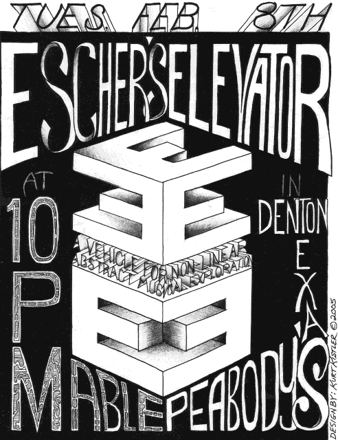
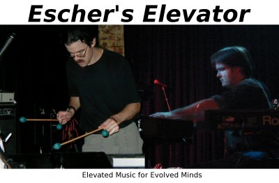

Escher's Elevator
Tuesday, February 8, 2005
10 p.m., $3
Mable Peabody's
(map)
Denton, TX
1215 E. University Drive
940-566-9910
|
| Featuring: |
| Kurt Kistler |
- Keyboards, Organ, Percussion, Effects |
| Cliff McCarthy |
- MalletKAT, Keyboards, Guitar, Percussion, Effects |
Escher's Elevator is a new collaboration between Kurt
Kistler and Cliff McCarthy. Drawing on our years of improvisational
interaction as members of Magpu, we
aim to create improvised music that visits non-traditional sonic realms,
while also incorporating more familiar elements. This music tends to be
fluid and gradual; themes and arrangements are created or discovered on
the spot and evolved by the demands of the moment. We gladly share our
music with anyone who takes the time to listen, and we thank you for
visiting us here on the web!
We have put together a short mix of some of the music we have produced
during our "Research and Development" sessions; you can download it
here:
- [mp3] [5:29]
Escher's Elevator Sample mix, December 2004
Audience taping of live Escher's Elevator performances is encouraged,
under the terms of the Magpu
Audio/Video Recording and Transfer Policy.
To contact the group, send e-mail to
ee2005@cliffmccarthy.net

Last modified: Wed Feb 2 02:10:06 CST 2005
This page created and maintained with html-helper-mode for Emacs.